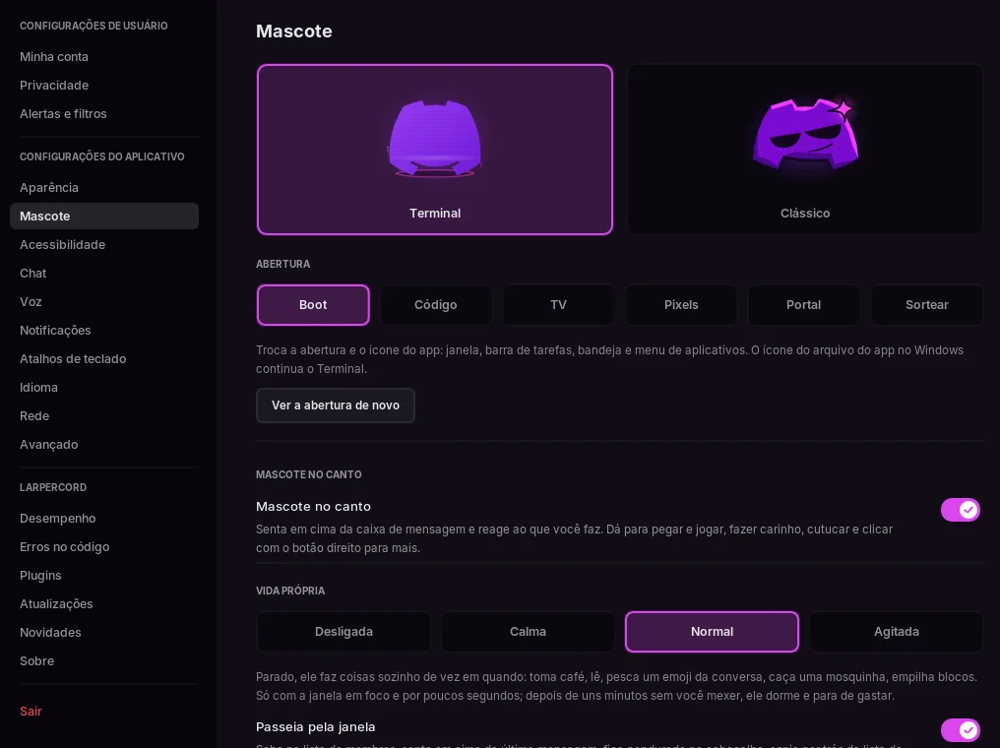
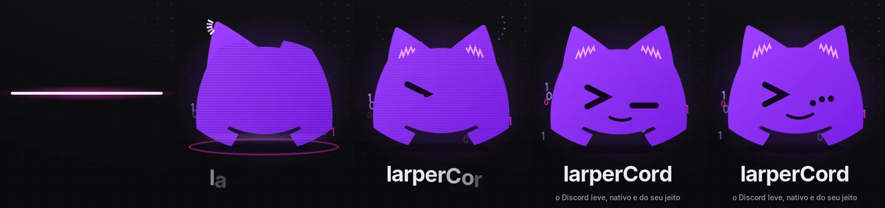
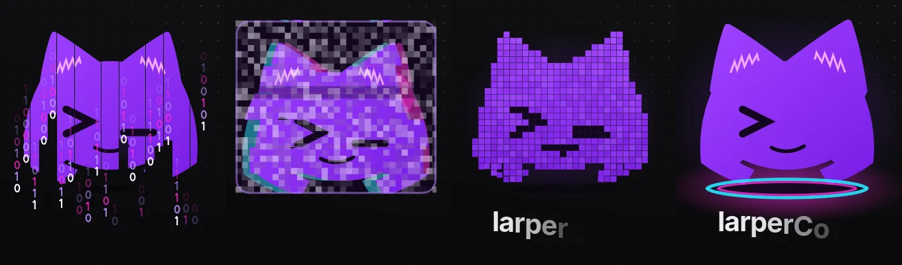
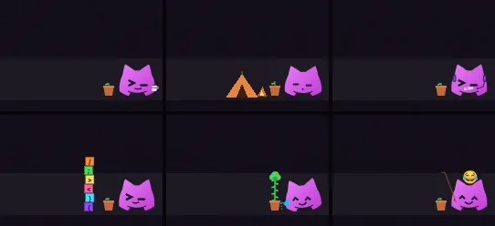

O mascote
O larperCord tem um mascote, e desde a 0.6.5 o principal é o Terminal, com a piscadinha >_. Ele faz a abertura enquanto o app conecta, cochila onde uma lista está vazia e pode sentar em cima da caixa de mensagem e reagir ao que você faz. Tudo dele fica em Configurações → Mascote, onde dá para desligar o mascote no canto e a vida própria dele.
Dois mascotes
Configurações → Mascote mostra os dois, com a prévia ao vivo: o Terminal, o principal, e o Clássico, o de antes da 0.6.5. A escolha também troca o ícone do app onde dá: a janela e a barra de tarefas, a bandeja, os avisos do Windows e, no Linux, o ícone do menu de aplicativos. No Windows, o ícone do próprio arquivo .exe continua o Terminal.

A abertura
Enquanto o app abre e conecta, o Terminal faz a abertura dele: um cursor de terminal pisca, uma linha de TV de tubo acende e abre o corpo, as orelhas saltam, o rosto é digitado (>, depois um _ piscando), ele mostra ... enquanto conecta e desliga como uma TV antiga quando o app aparece. O demo também mostra a abertura inteira.

O Terminal tem mais quatro aberturas, em Configurações → Mascote → Abertura: Código, TV, Pixels e Portal, ou Sortear, para cada vez ser uma. Ver a abertura de novo toca a escolhida outra vez na prévia. O Clássico continua com a abertura que já tinha.

Pelo app
O mascote aparece dormindo na caixa de entrada, nas fixadas, nas mensagens salvas e na lista de amigos quando estão vazias, e carregando junto com a conversa. Clique nele na tela de entrada ou em Configurações → Sobre e ele reage.
O mascote no canto
Mascote no canto (ligado de começo) põe ele em cima da caixa de mensagem, ao lado dos botões de GIF e de emoji.

- Os olhos seguem o mouse, ele digita junto, pula quando você manda e se assusta com menção.
- Ri, comemora, fica triste ou acena com o que você escreve. Isso é calculado no seu computador: nada disso vai pela rede.
- Dorme depois de uns minutos sem você mexer em nada.
- Pegue e jogue: ele quica nas bordas da janela, fica tonto e volta andando.
- Passe o mouse devagar por cima para fazer carinho, dê dois cliques para um truque, e cutucado demais ele emburra uns segundos, cada vez de um jeito.
- Em call ele bota fone, com fita na boca enquanto você está mudo.
- Pega fogo quando você digita rápido, fica tonto quando a conversa rola rápido demais, come o arquivo que você arrasta para a janela e fica preocupado quando a mensagem não sai.
- De madrugada tem olheiras e boceja, de manhã se espreguiça, em algumas datas usa chapéu, e pega a cor de destaque do tema.
- Reage ao emoji que você põe nas mensagens e mostra o seu status: uma lua no ausente, uma plaquinha no não perturbe (aí menção não assusta) e meio transparente no invisível.
Ctrl+Cfaz um clone,Ctrl+Zfaz ele andar para trás,Ctrl+Fdá uma lupa para ele, e a roda do mouse em cima dele faz cócegas.- Botão direito nele: Fazer um truque, Dormir, Esconder por 1 hora e Trocar de mascote.

Vida própria
Deixado à toa, o mascote do canto faz alguma coisa sozinho de vez em quando. Toma café, lê, joga no portátil, faz bola de chiclete, assobia, faz exercício, caça uma mosquinha, pesca um emoji das reações da conversa, empilha blocos que caem em cima dele quando você mexe, rabisca um coração na caixa de mensagem até você digitar e rega a plantinha. Vida própria escolhe com que frequência: Desligada, Calma, Normal (o padrão) ou Agitada.
Quatro chaves escolhem o que mais ele faz. O passeio precisa da vida própria ligada, e as outras três só do mascote no canto:
| Chave | O que faz |
|---|---|
| Passeia pela janela | Às vezes ele sai passeando: senta na última mensagem, sobe na lista de membros, fica pendurado no cabeçalho ou espia por trás da lista de canais. Pula junto quando você troca de canal e espia quando você abre uma thread |
| Brinca com a interface | Senta no "digitando…", leva mensagem apagada para a lixeira, passa a borracha na editada, empurra o botão de voltar ao fim, se segura (ou cai) quando você muda o tamanho da janela e leva uma cartinha até o ícone das DMs quando chega uma |
| Brinca com o mouse | Com a setinha parada perto dele, tenta pegar. Parada em cima dele, senta nela, e cai quando você mexe |
| Espera você voltar | Com a janela sem foco, ele espera você. Sumiu por 20 minutos, monta uma barraca com fogueira. Na volta, desmonta, corre até o mouse e, depois de horas, diz que sentiu saudade |
Plantinha põe um vasinho do lado dele. A planta cresce um pouco a cada dia em que você usa o app, por 30 dias, até virar uma arvorezinha. Depois de uma semana sem você, ela murcha, até o mascote regar. Configurações → Mascote mostra quantos dias ela já cresceu.
Personalizar o mascote
Configurações → Mascote → Personalizar veste o mascote Terminal. Uma prévia grande mostra o visual, e os botões embaixo dela trocam a cara (Normal, Feliz, Rindo, Susto, Bravo, Triste, Dormindo, Tonto) e põem o fone da call e a fita do mudo, para ver como as peças combinam.
- Visuais prontos: 16 visuais completos, do Hacker ao Anjinho. Sortear visual escolhe um que combina, Padrão volta ao mascote de sempre e Desfazer desfaz a última troca.
- Olhos, Boca, Chapéu, Acessórios, Orelhas, Cores: uma grade de imagens para cada. 15 olhos, 16 bocas, 22 chapéus, 12 acessórios (óculos e o que vai no pescoço, um de cada vez), 6 orelhas, 14 paletas, ou um hex seu para cada uma das cinco cores, ou a cor de destaque do tema.
- O visual aparece onde o mascote aparece: nas aberturas, no Sobre, nas listas vazias e no mascote do canto. Com um chapéu escolhido, o mascote do canto não troca pelo das datas; Chapéu nas datas, em Mascote no canto, desliga esses. O mascote Clássico continua como é.
Arquivos de mascote
Um mascote também pode ser um arquivo .kdl na pasta de mascotes (~/.config/larpercord/mascots, ou %APPDATA%\larpercord\mascots no Windows). Ele escolhe peças e cores como a personalização, ou desenha olhos, boca e camadas na frente ou atrás do corpo com formas, um desenho por expressão. Salvar como arquivo grava o visual de agora lá e passa a usar o arquivo. Em Arquivos de mascote, escolha um arquivo ou aperte Abrir pasta; salvar o arquivo atualiza o mascote na hora, e um arquivo com problema mostra arquivo:linha:coluna no cartão dele. O formato está em Escrevendo mascotes, e os mascotes feitos por outras pessoas estão na galeria de mascotes da comunidade.
Quanto custa
Ele só desenha quadros a mais por um instante quando algo acontece, e só com a janela em foco. A vida própria começa depois de 8 segundos sem você mexer em nada e para quando ele dorme, depois de uns minutos parado. Medido no demo, são uns 0,5% de um núcleo enquanto ele está acordado e à toa. Os números de CPU parado em Desempenho vêm de uma janela num workspace escondido, sem foco, então não incluem o mascote.
Para deixar mais leve, ponha Vida própria em Desligada ou desligue Mascote no canto.